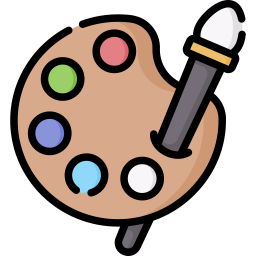
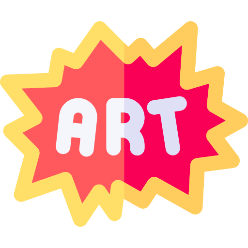
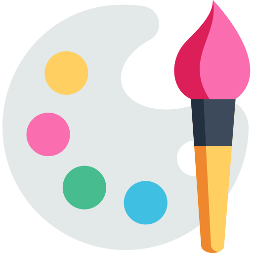

La galería virtual de arte DNS-CR promovida por los estudiantes Dianis Isabel Angulo Pallares y Ciro Alfonso Ramos Córdoba estudiantes de la universidad popular del cesar es un espacio académico y creativo dedicado a la difusión de las obras producidas por nuestros estudiantes. Este entorno digital reúne propuestas plásticas desarrolladas en diversos cursos y líneas de formación, permitiendo apreciar sus procesos estéticos, técnicos y conceptuales. Su propósito es visibilizar el talento emergente de la región y fortalecer la proyección artística de la facultad de bellas artes mediante una plataforma accesible, dinámica y abierta al público


Más que una galería, una plataforma que impulsa el talento artístico hacia nuevas dimensiones.
DNS-CR es una galería virtual de arte que busca promover y difundir el talento artístico de los estudiantes de la Facultad de Bellas Artes, ofreciendo un espacio virtual para que sus obras sean conocidas y apreciadas por un público más amplio. Con el objetivo de fomentar las competencias y habilidades artísticas, contribuyendo al desarrollo artístico plástico de los estudiantes.
Ser una galería virtual reconocida por su calidad, diversidad y compromiso con la difusión del arte. DNS-CR espera ser una herramienta que inspire y motive a nuevos artistas a desarrollar su creatividad y compartir su visión del mundo artístico con el público, ofreciendo además un espacio para comercializar sus obras y fomentar el emprendimiento artístico.
“ La pintura acrílica permitió a artistas jóvenes reinventar el arte; al tener material plastificado como aglutinante, es mucho más flexible que otro tipo de pinturas, lo que permite usarla en casi cualquier tipo de superficie. ” — Saishoart (2025)


La Facultad de Bellas Artes es un espacio que ofrece a los estudiantes la oportunidad de descubrir un mundo artístico a través de la carrera de Licenciatura en Artes.
Se destaca por brindar un amplio mundo de oportunidades para que los estudiantes se desarrollen en sus diferentes ámbitos artísticos, como la plástica, la danza, la música y el teatro.
La galería DNS-CR es un espacio para que los estudiantes de la Facultad de Bellas Artes puedan exponer sus obras artísticas plásticas, y nos enorgullece ser parte de esta institución.
Visitar sitio oficial →Cra. 15 #12A 54, Valledupar, Cesar
Ven y descubre el talento artístico.